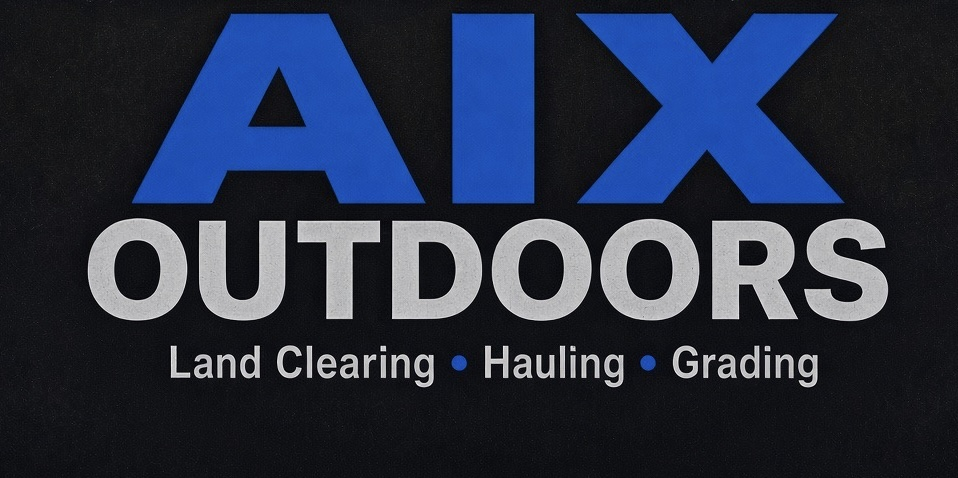

Land clearing
Forestry mulching on your acreage
Brush, fence-line thickets, and timber edges mulched in place so you can walk, plant, or maintain again. No burn pile left for you to deal with.

Services we offer
Why landowners call
If your property is stuck in one of these, that is the job — we bring the machines and finish the work on your land.
Potholes, no crown, failing culvert — your lane will not carry a trailer through mud season.
Fence lines, timber edges, and corners lost to hedge, briars, and saplings you cannot walk or mow.
No quiet way in, mud holes, ruts, or a cut that erodes every spring.
Wrong spot, wrong wind, poor soil, or a seed-bag layout that never hunted.
CRP-style ground going to brush, roadsides nobody keeps up, too rough for a yard mower.
Nowhere to dump on site, stone that has to come from a pit, spoil with no home.
Services we provide
Picture this on your ground. Real job footage first — then hire us to do the same finish at your place.
Brush, fence-line thickets, and timber edges mulched in place so you can walk, plant, or maintain again. No burn pile left for you to deal with.
Ruts, potholes, washouts, grass growing through the rock — we grade and resurface your lane so it drives smooth and sheds water. Why buy more rock when you can repurpose what you have?
Quiet, durable paths across your acreage that hold through mud season.
Food plots sized and sited to your ground — not a seed-bag photo.
Lanes, approaches, and pads so your stands hunt the way you planned.
Acreage mowing that keeps your fields and edges from going back to brush.
Haul-off and stone delivery when mulch-in-place is not the finish you want.
Simple process
Three steps. You stay the landowner — we show up as the contractor and do the work on your property.
Nearest town, a few photos, acres if you know them, and the finish you want — clearing, trails, plots, driveway, haul, or a mix.
We scope access, machine fit, and timeline. Sample ranges on this site are for orientation only — your estimate is written for your job.
Crew days in weather windows. Mulch, cut, plant, mow, gravel, or haul as quoted. Closeout photos when the job wraps.
Proof
Before/after stills and service groups in the gallery. Iowa farm and timber photos stand in for tagged closeouts in this sample — captions are illustrative until original job photos replace them.


Where we work
Based in Burlington, Iowa. If you can get us to the gate, we will tell you straight whether we can take the job.
Quick answers
You hire us. AIX Outdoors is a land-management contractor. We bring the machines to your property and do the work you scope — clearing, trails, plots, stands, mowing, driveways, hauling.
Acreage, density, terrain, access, stone needs, and the finish you want. Sample ranges on this site are for orientation only — not a bid. Your free estimate is written for your job.
Default on clearing is mulching in place as a natural mulch layer. Haul-off and stone delivery are the dump-truck line when that is what you want.
Yes — we work on your property. Tell us the nearest town and what you need done. If it is outside where we normally run, we will say so up front.
319-750-1530 · Quality work. Honest pricing. Locally owned & operated.
Google reviews · SAMPLE
Customer testimonies are a focus. This block is a mock of an embedded Google Business Profile until the live GMB place is connected.
Mulched a thick fence line on our acreage. Crew showed up when they said, left a clean mulch layer, and we can walk the edge again. Will hire for the driveway next.
Our gravel lane was all ruts and grass down the middle. They graded and resurfaced it — drives smooth and sheds water. Honest price, no surprises.
Cleared brush for a food plot and cut a trail to the stand. Communication was clear and the finish matched what we asked for on our property.